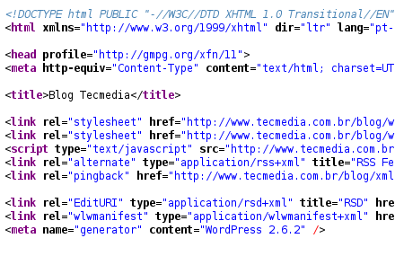
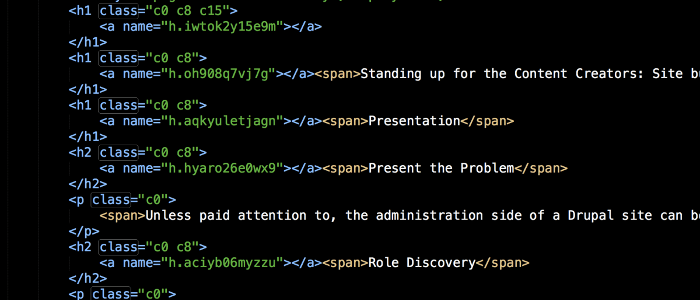

¿Les ha pasado que estan super inspirados escribiendo codigo pero repentinamente necesitan una luz divina que les diga que nombre ponerle a la variable que estan a punto de escribir?
Como Frontend,hay tantas cosas que debo nombrar en mi día a día: clases para cada elemento HTML, variables en Stylus que puedan ser reutilizables,componentes,archivos,funciones... Tengo que poner a volar mi imaginacion para poder lograrlo.
A pesar de que es algo que depende totalmente de nosotros y no hay una forma estrictamente correcto o incorrecta de hacerlo, nombrar cada elemento es un trabajo en el que debemos poner empeño, pues se vera impactado en la la organizacion y mantenibilidad de nuestro codigo
Fanny es parte del Team Platzi.Si quieres una carrera en Frontend, empieza por el Curso de Desarrollo Web y luego el Curso de Responsive Design.
Lo mas importante es que el nombre que le asignes siempre refleje el trabajo que esta haciendo, de esta froma podemos incluso reducir la necesidad de comentar cada linea de codigo con su funcionamiento
A continuacion algunos consejos que hay que seguir para evitar que algun desastre a la hora de nombrar un elemento en tu codigo.
Abreviar nombres puede que en algunos casos no sea tan buena idea.Seguramente con el paso del tiempo o cuando un nuevo desarrollador tengar que darle mantenimiento a tu codigo habra quedado en el olvido lo que esa variable representa.Lo ideal es utilizar nombres que describan la funcionalidad de nuestro codigo.
Por ejemplo, es mucho mas descriptivo escribir:
Que:
Generalmente los lenguajes de programación no permiten espacios en las variables. Sin embargo hay distintos métodos para separar el conjunto de palabras que conforman una variable y que de esta manera logren ser más legibles. Esto se puede hacer capitalizando cada palabra agrupada (camelCase) o separando cada palabra con underscore (snake_case).e_case).
Por ejemplo:
o
A pesar de que los nombres de variables cortos deben ser sustituidos por nombres de variables más largos y descriptivos, no quiere decir que tenemos que usar frases completas. Es importante que el nombre describa que es lo que el codigo asignado hace y no como lo hace. Utilizar un nombre largo puede incluso ser más susceptible a errores tipográficos a la hora de escribirlo. Se dice que la longitud recomendable es de 2 a 4 palabras o entre 8 y 20 caracteres.
En conclusión nombrar elementos no es difícil, más bien es un super poder o habilidad que va mejorando con la práctica. Nosotros como desarrolladores tenemos la responsabilidad de hacerlo lo mejor posible.
Si recien comienzas a programar, te invito al Curso de programacion basica para empezar a implementar estos consejos en tus proyectos. Y si llevas ya tiempo programando sin hacer uso de ellos, compartenos como te va siguiendo estas recomendaciones. Estoy segura que los desarrolladores que se topen con tu codigo en el futuro te lo agradeceran.